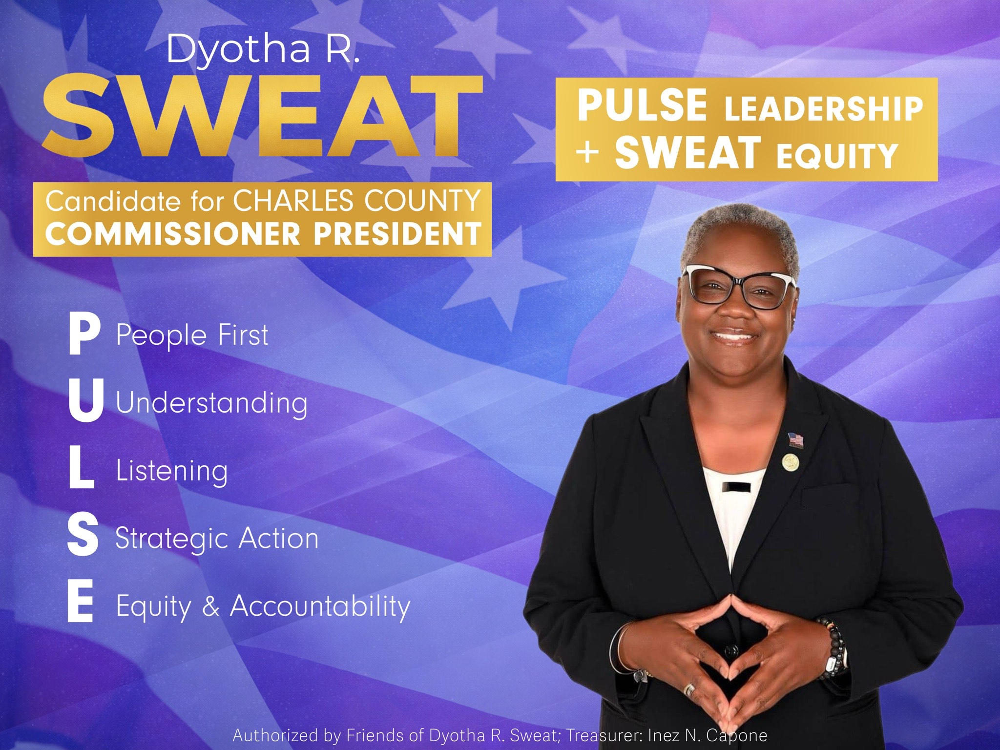
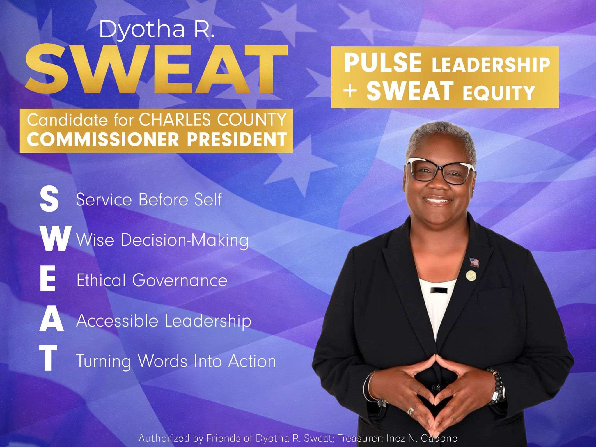
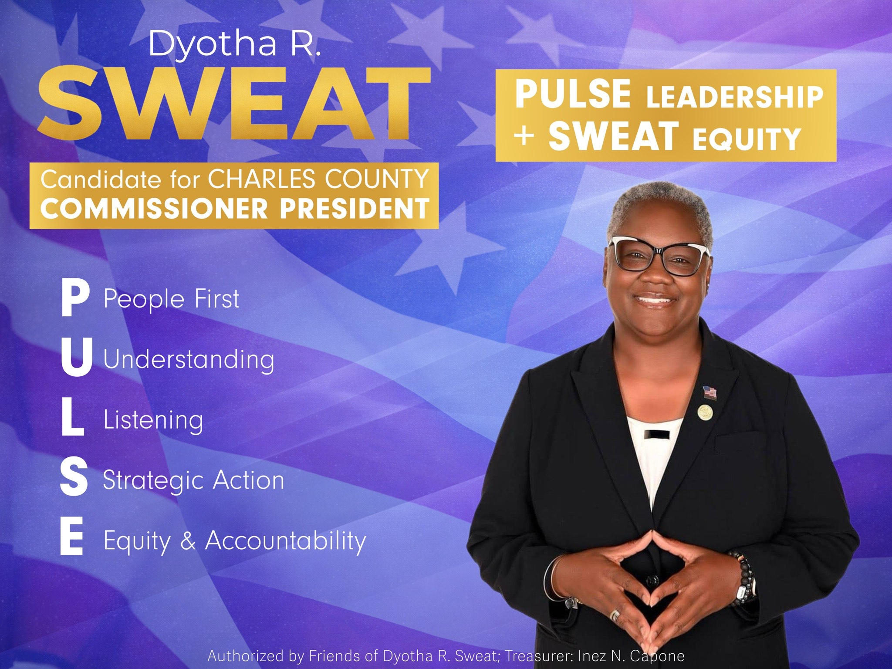
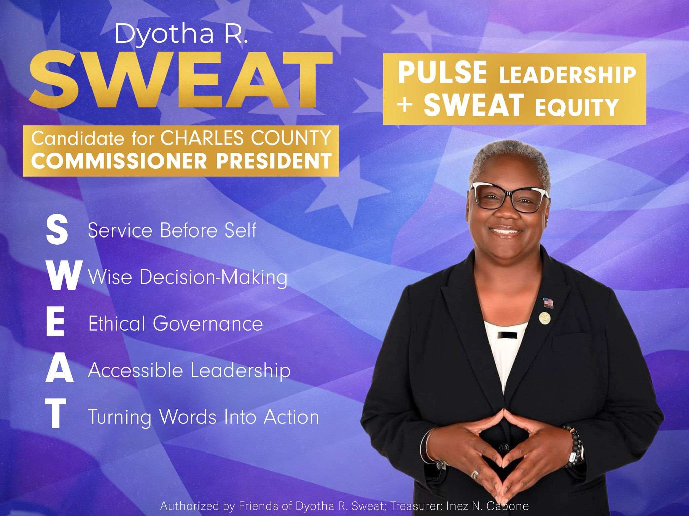

About Ashleigh
 




Pulse Leadership - SWEAT Equity
Dyotha Rene’ Sweat is a lifelong servant-leader whose work is rooted in integrity, accountability, and a deep commitment to community. Born in Franklin, Virginia and raised in Paterson, New Jersey, she served 24 years in the United States Navy, where she led with discipline, compassion, and respect—breaking barriers and setting new standards for excellence.
After retiring from military service, Dyotha remained committed to serving others. She has devoted her time to supporting veterans, mentoring youth, promoting educational opportunity, and strengthening local organizations. Her leadership is steady and grounded in listening, collaboration, and a belief that communities thrive when everyone has a fair chance to succeed.
Dyotha’s service has earned her numerous honors recognizing her dedication to humanitarian work, legislative and policy implementation and community impact. She holds the following degrees: BA: Sociology and MBA: Information Management. She continues to lead with the same values that guided her military career. A proud mother, grandmother, and dog mom, Dyotha remains focused on building safer, stronger, and more inclusive communities for generations to come.